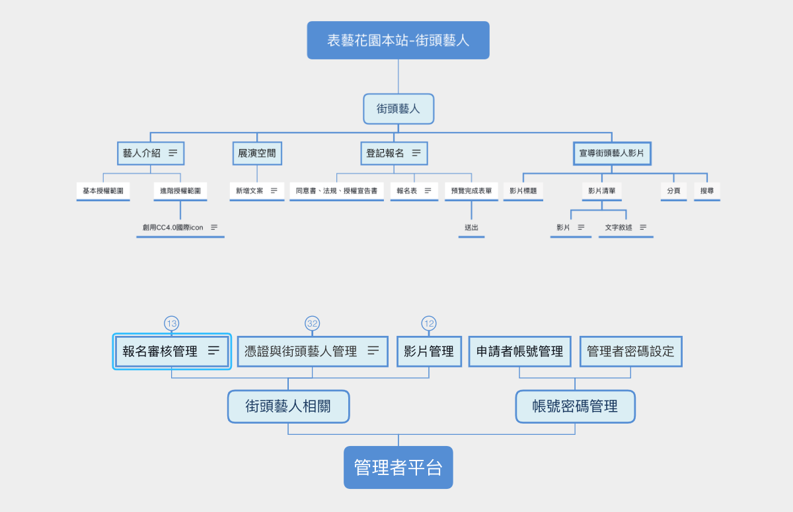

高雄市表演藝術花園
工作事項：客戶訪談、功能架構規劃、HTML與SCSS切版
使用工具與軟體：XMind、Axure RP、Adobe Xd、HTML、SCSS
【網站介紹】
推動街頭藝術風氣， 鼓勵藝文活動多元發展， 營造都市人文風貌，豐富市民精神生活促進街頭藝人合理使用展演空間並鼓勵街頭藝人從事街頭藝術文化活動。
【製作過程】
客戶需求 以前都是線下紙本申請審核資格，現在想改成線上作業減輕審核及管理作業上的麻煩
訪談過程 街頭藝人評鑑報名後的內部審核流程再請完整說明，像是需要準備什麼資料或是資格才能申請等等？
客戶：街頭藝人報名須填寫基本資料及上傳影片、照片和身分證正反面，機關內部審核內容包括：
- 申請人年齡是否滿16歲
- 照片和身分證是否清晰並符合報名資格
- 申請項目是否合乎規定（不得使用明火、不得使用食品製作等）


在線稿上標註注意事項請客戶和工程師確認
【解決問題】

Before：申請表單送出才會預覽已填寫的表單，若填寫錯誤只能聯絡承辦修改資料
After：現在改成送出前預覽填寫的表單才可以送出，節省人工審核時間
Before：若未滿16歲、16~20歲都可以送申請，但承辦都要查是否有符合資格或是有附上法定代理人同意書
After：填寫年齡判斷才能繼續填表單
未滿16歲 > 直接不得填寫
16-20歲 >
在附件頁有法定代理人同意書上傳欄位

Before：申請表單送出才會預覽已填寫的表單，若填寫錯誤只能聯絡承辦修改資料
After：改成團名顯示並非申請人